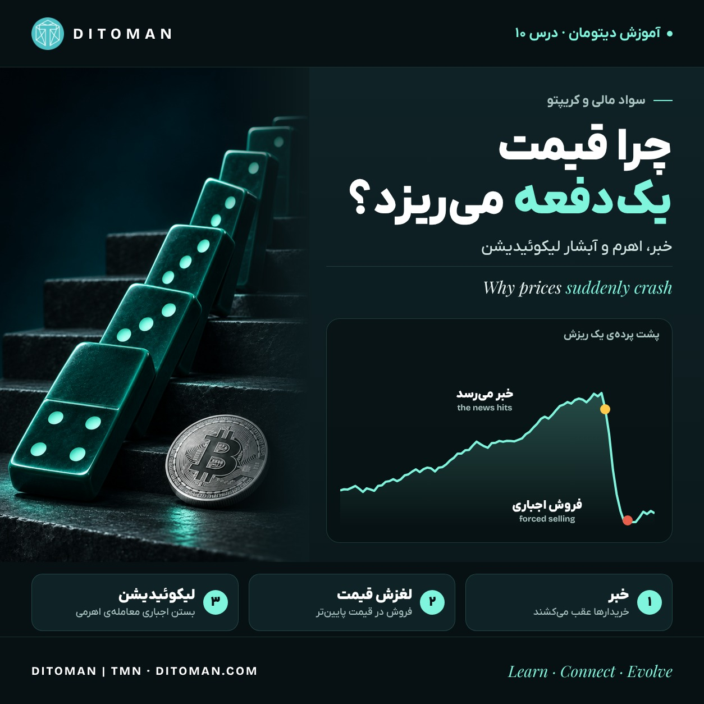

Why Do Prices Suddenly Crash?
چرا قیمت یکدفعه میریزد؟
News starts the fall. This lesson shows what happens next inside an exchange: buyers stepping back, slippage, leverage and the liquidation cascade, with the 5 November 2026 sell-off as the example.
خبر سقوط را شروع میکند. این درس نشان میدهد بعدش داخل صرافی چه میگذرد: عقب کشیدن خریدارها، لغزش قیمت، اهرم و آبشار لیکوئیدیشن؛ با ریزش ۱۴ آبان ۱۴۰۵ بهعنوان نمونه.
Lesson Content
محتوای درس
Read the lesson in English or Persian. This structure is designed for future quiz, score, reputation, and reward systems.
درس را به فارسی یا انگلیسی بخوانید. این ساختار برای آزمونک، امتیاز، اعتبار و پاداشهایی طراحی شده که در آینده اضافه میشوند.
In lesson 07 we saw how news changes what the market expects. This lesson goes one step further: once the news arrives, what happens inside an exchange that can turn a normal dip into a sharp crash? The short answer is three things working together: nervous buyers, thin order books and borrowed money.
01. Markets react to surprises
A Bloomberg Opinion chart by John Authers shows global stocks (the FTSE All-World index) climbing for two years, broken by a few sharp falls, each tied to a big political or economic shock. The pattern is the lesson: prices move most when news differs from what people expected, and fear spreads faster than calm.
02. A real example: 5 November 2026
On Thursday 5 November 2026, tech stocks sold off on worries about AI spending. The Nasdaq 100 fell about 5.5% in a day and the Nasdaq Composite 4.9%. Bitcoin fell below $76,000, touching about $75,500. In the same 24 hours, CoinGlass data showed about $1 billion of leveraged crypto positions forcibly closed, affecting more than 201,000 traders. About 89% of that, around $927 million, were bets that prices would rise.
03. The price on the screen is not always your price
The chart shows the last trade. To sell, you need a buyer. Imagine the last trade was $100, but there is only one buyer at $100 and the next one is at $95. If you sell two units at once, you get $100 for the first and $95 for the second: an average of $97.50. That gap is called slippage. When buyers step back after bad news, the gaps between them grow, and every market sell order pushes the price down further.
04. Leverage: trading with borrowed money
Many crypto exchanges let you trade with leverage. With 10× leverage, $100 of your own money (your margin, or collateral) controls a $1,000 position. If the price rises 10%, you double your money. If it falls about 10%, your $100 is gone.
05. Liquidation: the exchange closes the trade for you
Before your margin hits zero, the exchange closes your position automatically by selling it at market. This is a liquidation. You do not choose the moment; the price does.
06. The cascade
Now put it together. Bad news makes buyers step back. A small fall triggers the first liquidations. Those forced sales hit a thin order book, so the price slips further. The lower price triggers the next group of liquidations, and so on. That is why crypto can fall in minutes far more than the news alone would justify, and why it often bounces once the forced selling is over.
07. If Bitcoin is independent, why does it fall with stocks?
Bitcoin's network does not depend on any government or company (lessons 01 to 04). Its price is a different matter. Many investors hold both stocks and crypto, and when they want less risk they sell some of both. A network can be independent while its price still moves with the mood of the same people.
08. How to protect yourself
- Know that leverage multiplies losses as much as gains; most beginners are better off without it.
- Use limit orders instead of market orders when markets are moving fast, so you choose your price.
- Look at the order book, not only the chart, before a large trade.
- Only use money whose loss would not break your household budget.
- Do not decide in the first minutes of a crash; forced selling often ends as fast as it starts.
This lesson explains how markets work. It is not a recommendation to buy or sell anything.
What to take from this
News starts the fall. Thin order books and borrowed money decide how far it goes.
در درس هفتم دیدیم خبر چطور انتظار بازار را عوض میکند. این درس یک قدم جلوتر میرود: بعد از رسیدن خبر، داخل صرافی چه اتفاقی میافتد که یک افت معمولی به سقوط تند تبدیل میشود؟ جواب کوتاه: سه چیز با هم کار میکنند؛ خریدارهای نگران، دفتر سفارش کمعمق و پول قرضی.
۰۱. بازار به غافلگیری واکنش نشان میدهد
نموداری از جان آترز در Bloomberg Opinion نشان میدهد شاخص سهام جهانی FTSE All-World دو سال بالا رفته و چند بار بهتندی افت کرده؛ هر بار همراه یک شوک بزرگ سیاسی یا اقتصادی. درس همین الگوست: قیمت وقتی بیشتر حرکت میکند که خبر با انتظار مردم فرق داشته باشد، و ترس سریعتر از آرامش پخش میشود.
۰۲. یک نمونهی واقعی: ۱۴ آبان ۱۴۰۵
پنجشنبه ۱۴ آبان ۱۴۰۵ (۵ نوامبر ۲۰۲۶) سهام فناوری با نگرانی دربارهی هزینههای هوش مصنوعی ریخت. نزدک ۱۰۰ در یک روز حدود ۵٫۵٪ و نزدک مرکب ۴٫۹٪ افت کرد. بیتکوین به زیر ۷۶ هزار دلار رسید و تا حدود ۷۵٬۵۰۰ دلار پایین رفت. در همان ۲۴ ساعت، طبق دادهی CoinGlass، حدود یک میلیارد دلار معاملهی اهرمی کریپتو بهزور بسته شد و بیش از ۲۰۱ هزار معاملهگر را درگیر کرد. حدود ۸۹٪ آن، نزدیک ۹۲۷ میلیون دلار، شرطهایی بود که روی بالا رفتن قیمت بسته شده بود.
۰۳. قیمت روی صفحه همیشه قیمت شما نیست
نمودار آخرین معامله را نشان میدهد. برای فروش، خریدار لازم است. فرض کنید آخرین معامله ۱۰۰ دلار بوده، اما فقط یک خریدار در ۱۰۰ هست و خریدار بعدی در ۹۵. اگر دو واحد را فوری بفروشید، اولی ۱۰۰ و دومی ۹۵ دلار فروخته میشود؛ میانگین ۹۷٫۵ دلار. به این فاصله لغزش قیمت (Slippage) میگویند. وقتی بعد از خبر بد خریدارها عقب میکشند، فاصلهی بینشان بیشتر میشود و هر سفارش فروش فوری قیمت را پایینتر میبرد.
۰۴. اهرم: معامله با پول قرضی
بسیاری از صرافیهای کریپتو معاملهی اهرمی دارند. با اهرم ۱۰ برابر، ۱۰۰ دلار پول خودتان (یعنی وثیقه یا مارجین) یک معاملهی ۱۰۰۰ دلاری را کنترل میکند. اگر قیمت ۱۰٪ بالا برود، پولتان دو برابر میشود. اگر حدود ۱۰٪ پایین بیاید، همهی ۱۰۰ دلار از دست رفته است.
۰۵. لیکوئیدیشن: صرافی معامله را بهجای شما میبندد
پیش از اینکه وثیقهتان به صفر برسد، صرافی معامله را خودکار و با قیمت بازار میفروشد. به این لیکوئیدیشن یا فروش اجباری میگویند. لحظهاش را شما انتخاب نمیکنید؛ قیمت انتخاب میکند.
۰۶. آبشار فروش
حالا همه را کنار هم بگذارید. خبر بد خریدارها را عقب میکشد. یک افت کوچک اولین لیکوئیدیشنها را فعال میکند. این فروشهای اجباری به دفتر سفارش کمعمق میخورند و قیمت بیشتر میلغزد. قیمت پایینتر گروه بعدی لیکوئیدیشنها را فعال میکند، و همینطور ادامه دارد. برای همین کریپتو گاهی در چند دقیقه خیلی بیشتر از وزن خود خبر میریزد، و وقتی فروش اجباری تمام شد، اغلب کمی برمیگردد.
۰۷. اگر بیتکوین مستقل است، چرا با بورس میریزد؟
شبکهی بیتکوین به هیچ دولت یا شرکتی وابسته نیست (درسهای ۱ تا ۴). اما قیمتش موضوع دیگری است. خیلی از سرمایهگذارها هم سهام دارند و هم کریپتو، و وقتی بخواهند ریسکشان را کم کنند، از هر دو میفروشند. شبکه میتواند مستقل باشد و قیمتش هنوز با حال و هوای همان آدمها تکان بخورد.
۰۸. چطور از خودمان محافظت کنیم
- اهرم ضرر را به همان اندازهی سود چند برابر میکند؛ برای بیشتر تازهکارها بهتر است سراغش نروند.
- در بازار پرنوسان بهجای سفارش فوری (مارکت) از سفارش با قیمت مشخص (لیمیت) استفاده کنید تا قیمت را خودتان انتخاب کنید.
- پیش از معاملهی بزرگ، علاوه بر نمودار، دفتر سفارش را هم نگاه کنید.
- فقط با پولی معامله کنید که از دست دادنش بودجهی خانه را به هم نریزد.
- در چند دقیقهی اول سقوط تصمیم نگیرید؛ فروش اجباری اغلب همانقدر سریع که شروع میشود، تمام میشود.
این درس سازوکار بازار را توضیح میدهد و توصیهای برای خرید یا فروش هیچ دارایی نیست.
چه برداشتی کنیم
خبر سقوط را شروع میکند. دفتر سفارش کمعمق و پول قرضی تعیین میکنند تا کجا ادامه پیدا کند.
Try It Yourself
خودتان امتحان کنید
Open the order book of any coin on an exchange you use. Add up how much is bid within 1% and within 5% of the current price. Ask yourself: if I sold my whole position at market right now, what average price would I get?
دفتر سفارش یک ارز را در صرافیای که استفاده میکنید باز کنید. جمع سفارشهای خرید تا ۱٪ و تا ۵٪ زیر قیمت فعلی را حساب کنید. از خودتان بپرسید: اگر همین حالا کل داراییام را فوری بفروشم، میانگین چه قیمتی میگیرم؟
Key Concepts
مفاهیم کلیدی
- Expectations and surprise
- Order book and market depth
- Slippage
- Leverage and margin
- Liquidation and the liquidation cascade
- Network independence vs price behaviour
- انتظار و غافلگیری
- دفتر سفارش و عمق بازار
- لغزش قیمت
- اهرم و وثیقه
- لیکوئیدیشن و آبشار فروش
- استقلال شبکه در برابر رفتار قیمت
Learning Objectives
اهداف یادگیری
- Explain why the price on the chart can differ from the price you get.
- Calculate the average price of a market order through a thin order book.
- Describe how leverage and margin work, and when a liquidation happens.
- Explain how liquidations can feed on each other in a cascade.
- Name practical ways to reduce these risks.
- توضیح دهید چرا قیمت روی نمودار با قیمتی که میگیرید فرق میکند.
- میانگین قیمت یک سفارش فوری را در دفتر سفارش کمعمق حساب کنید.
- شرح دهید اهرم و وثیقه چطور کار میکنند و لیکوئیدیشن کی اتفاق میافتد.
- توضیح دهید لیکوئیدیشنها چطور در یک آبشار همدیگر را تشدید میکنند.
- راههای عملی کم کردن این ریسکها را نام ببرید.
Future Quiz Bank
بانک پرسشهای آزمونک آینده
These questions are prepared for the future Ditoman quiz and participation system. They may later support learning scores, reputation layers, and possible TMN reward eligibility.
این پرسشها برای سامانهی آزمونک و مشارکت آیندهی دیتومان آماده شدهاند. ممکن است بعدها مبنای امتیاز یادگیری، لایههای اعتبار و احتمالاً شرایط دریافت پاداش TMN شوند.
Question 1
پرسش ۱
The last trade was $100. There is one buyer at $100 and the next at $95. You sell two units at market. What is your average price?
آخرین معامله ۱۰۰ دلار بوده. یک خریدار در ۱۰۰ و بعدی در ۹۵ دلار است. دو واحد را فوری میفروشید. میانگین قیمت فروش چقدر است؟
A. $100
الف. ۱۰۰ دلار
B. $97.50
ب. ۹۷٫۵ دلار
C. $95
ج. ۹۵ دلار
D. $102.50
د. ۱۰۲٫۵ دلار
Correct answer: B
پاسخ درست: ب
Question 2
پرسش ۲
With 10× leverage and $100 of margin, roughly how far must the price fall before your margin is gone?
با اهرم ۱۰ برابر و ۱۰۰ دلار وثیقه، قیمت حدوداً چقدر باید بیفتد تا وثیقه از دست برود؟
A. 1%
الف. ۱٪
B. 10%
ب. ۱۰٪
C. 50%
ج. ۵۰٪
D. 100%
د. ۱۰۰٪
Correct answer: B
پاسخ درست: ب
Question 3
پرسش ۳
What is a liquidation?
لیکوئیدیشن چیست؟
Correct answer: When the exchange automatically closes a leveraged position because the margin is running out.
پاسخ درست: وقتی صرافی یک معاملهی اهرمی را بهخاطر تمام شدن وثیقه، خودکار میبندد.
Question 4
پرسش ۴
True or False: if Bitcoin's network is independent of governments, its price cannot fall together with stocks.
درست یا نادرست: اگر شبکهی بیتکوین از دولتها مستقل است، قیمتش نمیتواند همزمان با سهام بریزد.
Correct answer: False. Many investors hold both and sell both when they want less risk.
پاسخ درست: نادرست. خیلی از سرمایهگذارها هر دو را دارند و برای کم کردن ریسک از هر دو میفروشند.
Question 5
پرسش ۵
On 5 November 2026, roughly what share of the ~$1 billion crypto liquidations were bets on rising prices?
در ۱۴ آبان ۱۴۰۵، حدوداً چه سهمی از لیکوئیدیشن یک میلیارد دلاری کریپتو، شرط روی بالا رفتن قیمت بود؟
A. About 11%
الف. حدود ۱۱٪
B. About 50%
ب. حدود ۵۰٪
C. About 89%
ج. حدود ۸۹٪
D. 100%
د. ۱۰۰٪
Correct answer: C
پاسخ درست: ج
Sources
منابع
- Bloomberg Opinion, John Authers: FTSE All-World index chart (Instagram post, November 2026)
- CryptoSlate, 5 Nov 2026: Nasdaq 100 −5.5%, liquidations about $1bn, 201,000+ traders
- The Coin Republic, 5 Nov 2026: Bitcoin low $75,463, CoinGlass liquidation data
- Ditoman Lesson 07: How big news moves Bitcoin
Follow Ditoman
دیتومان را دنبال کنید
New lessons are announced first on Ditoman's Telegram and Instagram.
درسهای تازه اول در تلگرام و اینستاگرام دیتومان معرفی میشوند.